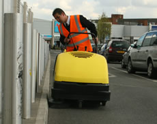

One-stop supplier keeps it simple
Making a good first impression is vital.
Marble-lined entrance halls and eye-catching window displays are all very well, but clean, well-lit roadways, swept pathways, trimmed hedges, informative signage and the absence of litter and graffiti tell the shopper just as much about the kind of shopping experience they can expect.
We don’t need to tell you that it takes a lot of people working away behind the scenes to maintain that attractive, just-swept look. And dealing with a huge range of service providers – from landscape gardeners to lighting engineers, litter pickers to sign makers – can eat up management time.
Why give yourself the problem of dealing with a host of maintenance and cleaning suppliers – who will probably all need briefing, managing and invoicing separately – when you can keep it simple?
CP Plus FM Services takes on that responsibility, greatly reducing the time you need to spend on costly administration and management. We can fulfil all your FM service requirements from just one single point of contact.
CP Plus FM Services can meet your needs: our FM service ranges from occasional maintenance support to full on-site management of your FM requirements.
Visit the CP Plus main website for information on our car park management solutions.